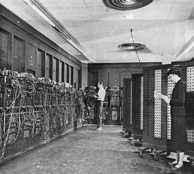
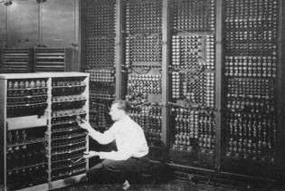
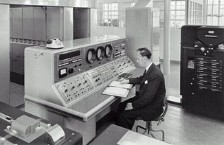
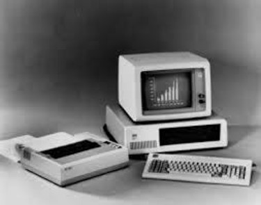
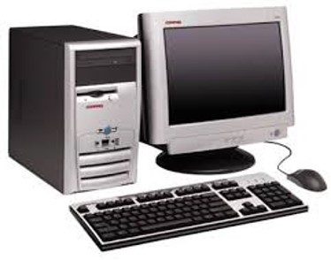
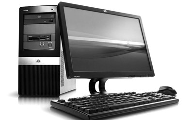

A história da computação é mais antiga do que o componente físico que hoje recebe seu nome. A computação inicia-se nos primórdios da história da humanidade, em sua necessidade de armazenar informações, efetuar contagem e criar mecanismos que lhe facilitasse à chegada de resultados complexos baseados nesta contagem.
De acordo com a história tradicional, a computação evoluiu rapidamente, em curto período de tempo.
A era da computação nasceu quando o homem procurou ultrapassar os limites práticos da aritmética. Máquinas de somar e caixas registradoras surgiram primeiro, mas era crítica a busca pela organização de computações matemáticas usando o que hoje chamamos de “programas”.
O PRIMEIRO COMPUTADOR
O primeiro computador do mundo foi o ENIAC foi o primeiro computador de uso geral eletrônico. Foi um computador digital completo capaz de ser reprogramado para resolver uma ampla gama de problemas de computação. ENIAC foi projetado para calcular tabelas de artilharia do exército dos Estados Unidos no Laboratório de Pesquisa, mas seu primeiro uso foi em cálculos para a bomba de hidrogênio. Quando o ENIAC foi anunciado em 1946, foi anunciado na imprensa como um "gigante do cérebro".

GERAÇÕES DE COMPUTADORES
As três primeiras gerações de computadores refletiam a evolução dos componentes básicos do computador e um aprimoramento dos programas existentes. Os computadores de primeira geração (1945–1959) usavam válvulas eletrônicas, quilômetros de fios, eram lentos, enormes e esquentavam muito.

A segunda geração (1959–1964) substituiu as válvulas eletrônicas por transistores e os fios de ligação por circuitos impressos, o que tornou os computadores mais rápidos, menores e de custo mais baixo.

A terceira geração de computadores (1964–1970) foi construída com circuitos integrados, proporcionando maior compactação, redução dos custos e velocidade de processamento da ordem de micro segundos. Tem início a utilização de avançados sistemas operacionais.

A quarta geração, de 1970 até hoje, é caracterizada por um aperfeiçoamento da tecnologia já existente, proporcionando uma otimização da máquina para os problemas do usuário, maior grau de miniaturização, confiabilidade e velocidade maior, já da ordem de nano segundos.

A computação da quinta geração ou computador da quinta geração, deve o seu nome a um projeto gigantesco de pesquisa governamental e industrial no Japão durante a década 80 do século XX.
O projeto tinha como principal objetivo a criação de um computador que “marcasse uma época” com performance semelhante a um supercomputador e capacidade prática de inteligência artificial.

CONCLUSÃO
O ato de computar surgiu da necessidade do ser humano armazenar informações, efetuar contagem e criar mecanismos que facilitassem cálculos e resultados complexos baseados nesta contagem.
Diversas ferramentas foram utilizadas através da história para realizar estes cálculos. Entre os principais os dedos da mão, o ábaco e outros instrumentos. Estes instrumentos dariam origem aos nossos modernos computadores.
Apesar de diversos equipamentos criados, o desenvolvimento da computação tomara impulso apenas devido às necessidades logísticas da Segunda Grande Guerra.